Menyu
Barcha taomlar surat va narxlari bilan — dasturxonga qanday tortilsa, shunday. Menyu Telegram-botda ham bor.
Shashliklar
12 ta taom-
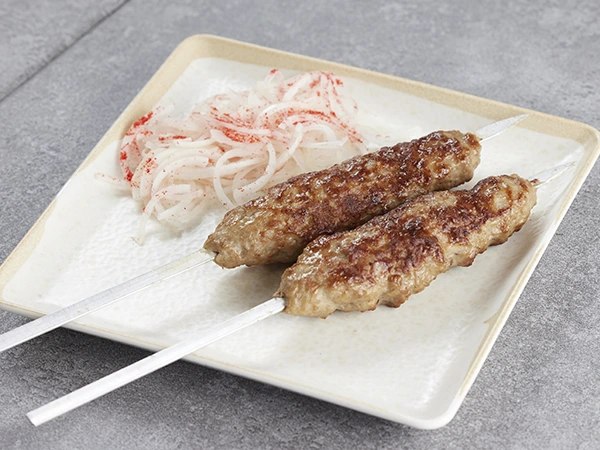
Qiyma shashlik
26 000 so'mMol va qo‘y go‘shti, piyoz, charvi
1 six -
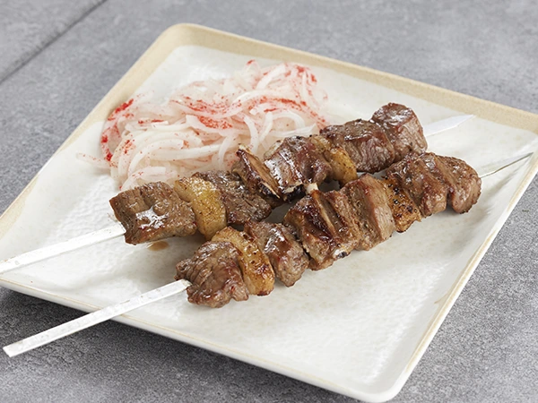
Jaz qo‘y go‘shti
28 000 so'mQo‘y go‘shti, dumba yog‘i
1 six -
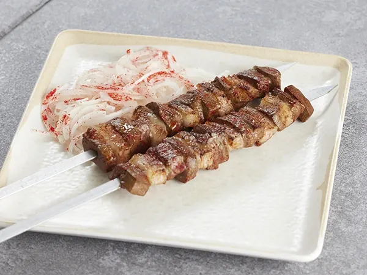
Jaz mol go‘shti
28 000 so'mMol go‘shti, dumba yog‘i
1 six -
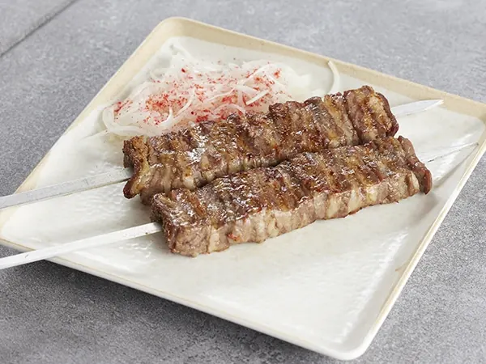
Napoleon
38 000 so'mMol go‘shti, charvi yog‘i
1 sixXit -
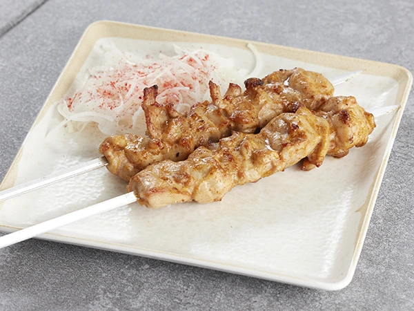
Tovuq shashlik
21 000 so'mTovuq go‘shti
1 six -
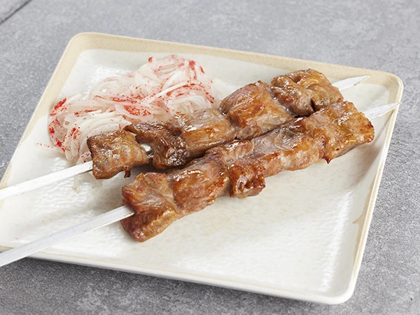
Baliq shashlik
21 000 so'mBaliq
1 six -
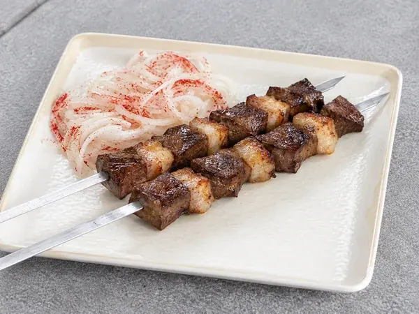
Jigar shashlik
21 000 so'mQo‘y jigari, dumba yog‘i
1 six -
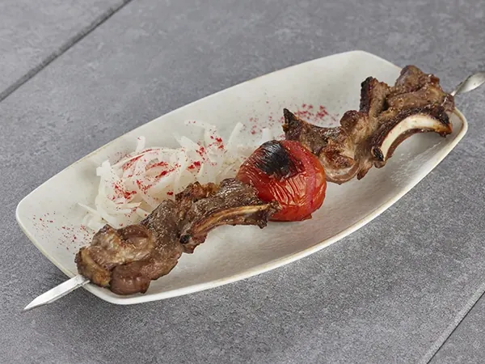
Kavkaz koreyka
103 000 so'mQo‘y go‘shti koreyka, pomidor
1 porsiya -
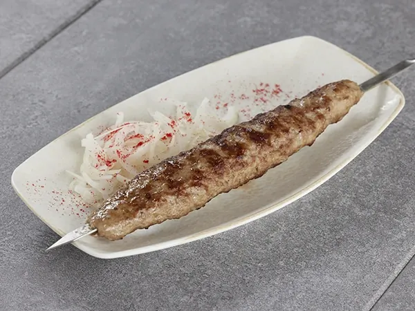
Kavkaz qiyma
65 000 so'mMol va qo‘y go‘shti
1 porsiya -
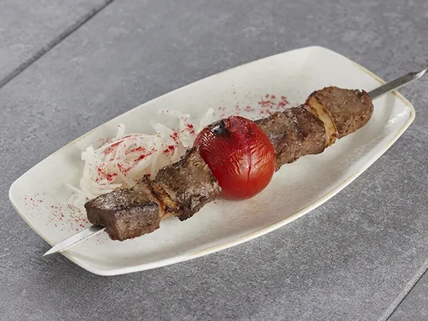
Kavkaz jaz
59 000 so'mMol go‘shti, pomidor
1 porsiya -
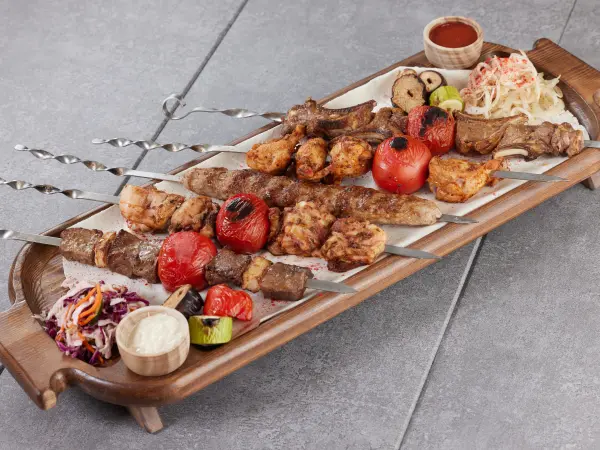
Shashlik assorti (kavkaz)
240 000 so'mKavkaz shashliklari assortisi
davra uchun -
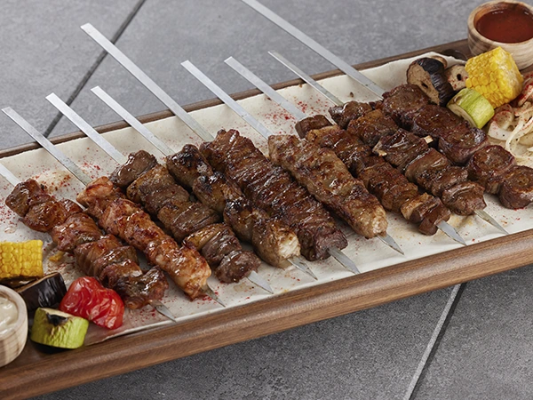
Shashlik assorti
198 000 so'mShashlik assorti
davra uchunXit
Milliy taomlar
27 ta taom-
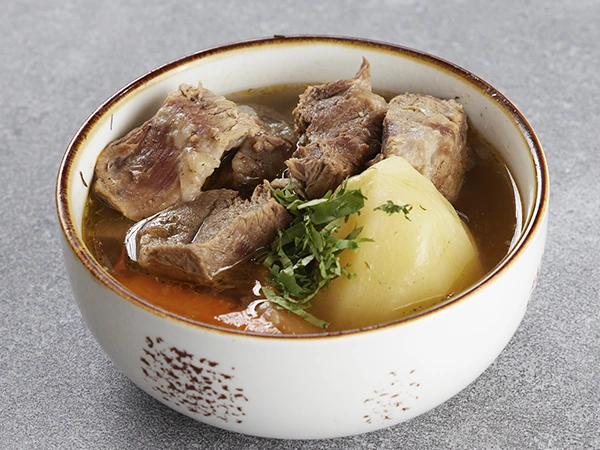
Qaynatma sho‘rva
53 000 so'mMol go‘shti, kartoshka, sabzi, bolgar qalampiri, piyoz
1 porsiya -
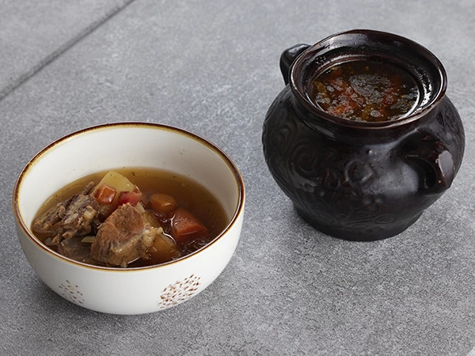
Ko‘za sho‘rva
56 000 so'mMol va qo‘y go‘shti, kartoshka, sabzi, bolgar qalampiri, pomidor, piyoz
1 porsiya -
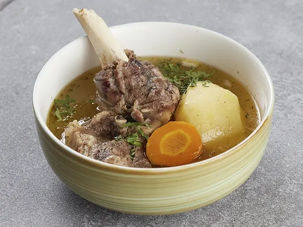
Ilik sho‘rva
84 000 so'mQo‘y go‘shti, kartoshka, sabzi
1 porsiyaXit -
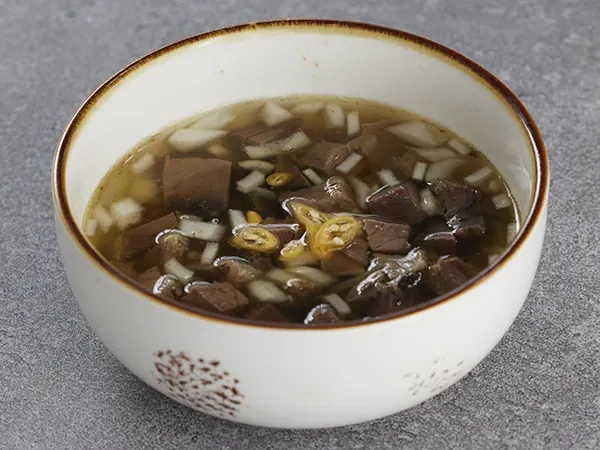
Darmon sho‘rva
56 000 so'mOt go‘shti, qazi, no‘xat, piyoz, maxsus bulon
1 porsiya -
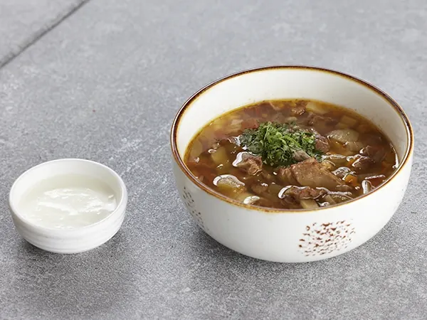
Mastava
37 000 so'mMol va qo‘y go‘shti, guruch, kartoshka, sabzi, pomidor, piyoz
1 porsiya -
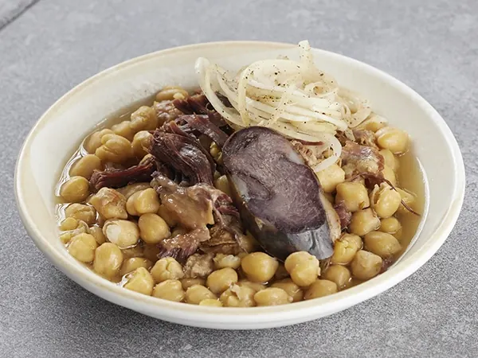
No‘xat sho‘rak
62 000 so'mNo‘xat, mol go‘shti, qazi, piyoz
1 porsiya -
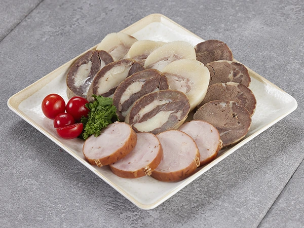
Go‘sht assorti
150 000 so'mQazi, indeyka, rulet, qarta
1 porsiya -
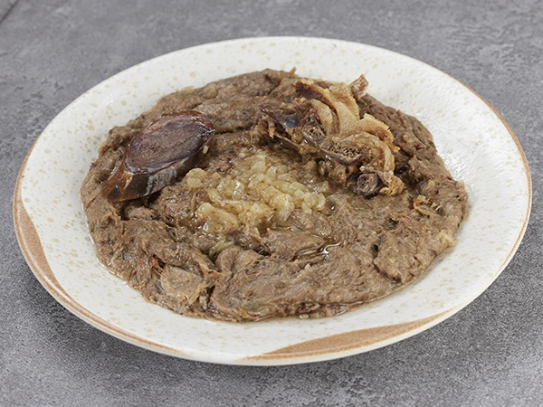
Moshkichiri
72 000 so'mMol, qo‘y va ot go‘shti, qazi, mosh, guruch, piyoz
1 porsiya -
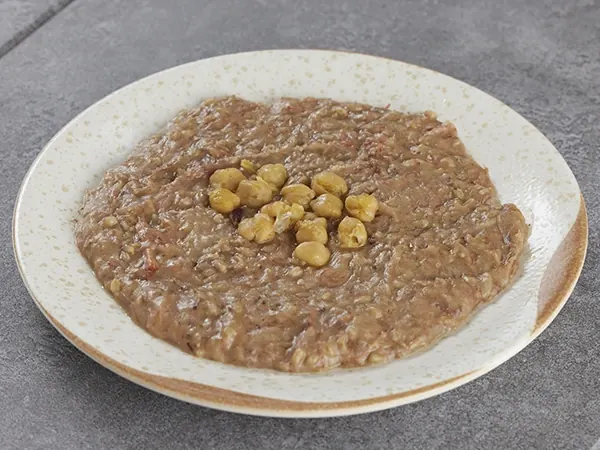
Halim
60 000 so'mMol va qo‘y go‘shti, bug‘doy, no‘xat, piyoz
1 porsiya -
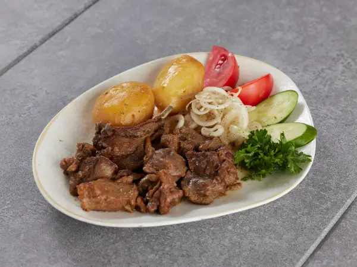
Jiz
91 000 so'mMol va qo‘y go‘shti, kartoshka, piyoz, pomidor, bodring
1 porsiya -
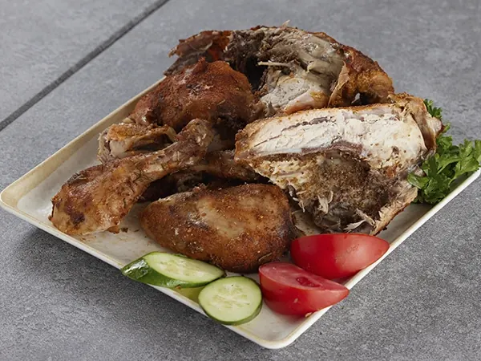
Yaxna tovuq
95 000 so'mTovuq go‘shti, pomidor, bodring, pomidor sousi
1 porsiya -
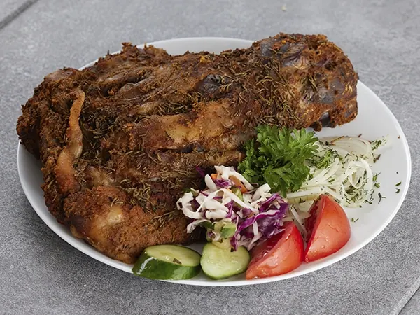
Yaxna go‘sht
348 000 so'mQo‘y go‘shti, pomidor, bodring, piyoz
1 kg -
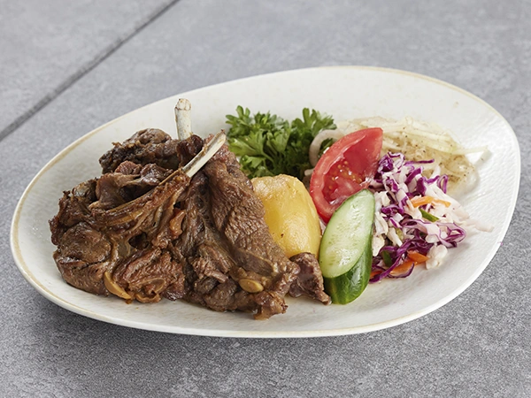
Qozon kabob (qo‘y)
91 000 so'mQo‘y go‘shti, kartoshka, piyoz
1 porsiya -
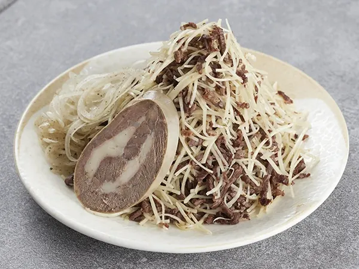
Norin
140 000 so'mOt go‘shti, maxsus xamir, qazi, piyoz
1 kgXit -
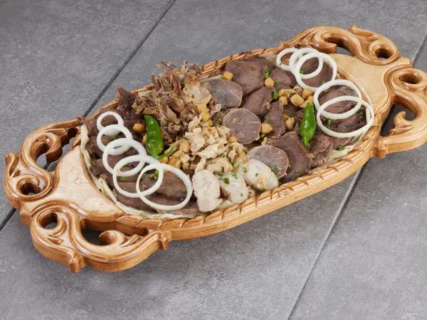
Beshbarmoq
88 000 so'mOt go‘shti, qazi, qarta, to‘sh, maxsus xamir, no‘xat, garmdori, piyoz
1 porsiyaXit -
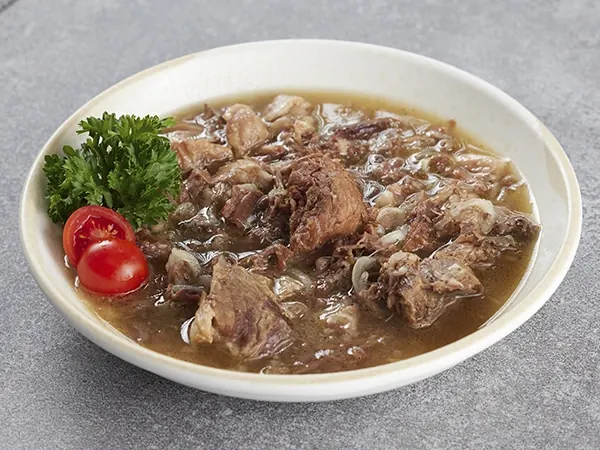
Tushonka
91 000 so'mMol go‘shti, piyoz
1 porsiya -
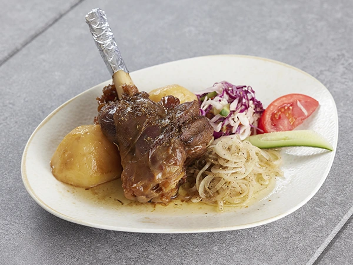
Qo‘zichoq soni
125 000 so'mQo‘y go‘shti, kartoshka, piyoz
1 porsiya -
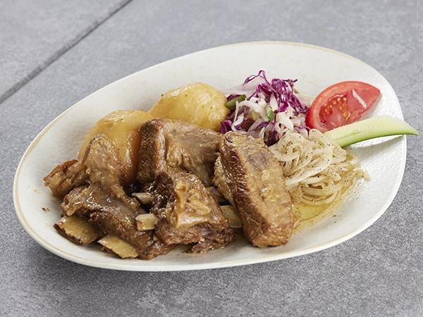
Qozon kabob (mol)
92 000 so'mMol go‘shti, kartoshka, piyoz
1 porsiya -
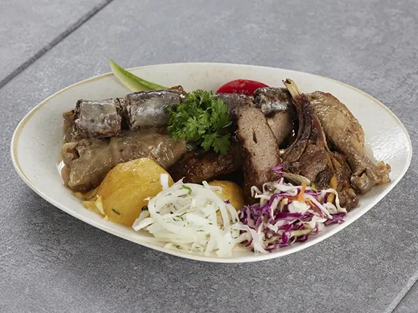
Assorti
94 000 so'mQo‘y go‘shti, qiyma, tovuq, hasip, tok va karam do‘lmasi
1 porsiya -
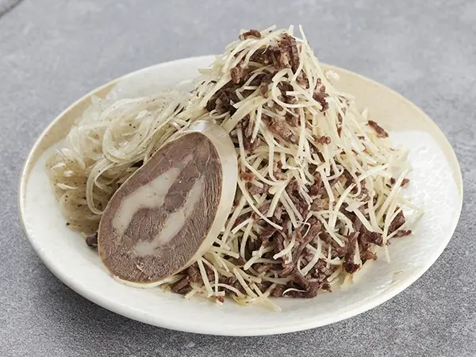
Norin, 250 g
50 000 so'mNorin va bir bo‘lak qazi
250 g + qazi -
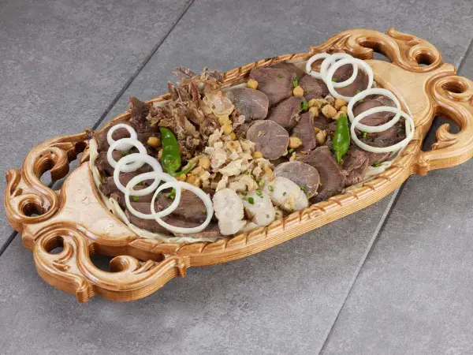
Beshbarmoq, 2 qism
157 000 so'm1 porsiya -

Beshbarmoq lagani (kichik)
314 000 so'mdavra uchun -

Beshbarmoq lagani (o‘rta)
421 000 so'mdavra uchun -

Beshbarmoq lagani (katta)
525 000 so'mdavra uchun -
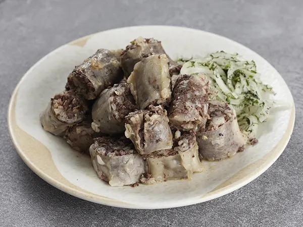
Hasip
51 000 so'mMilliy hasip
1 porsiya -
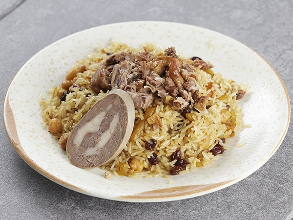
To‘y oshi
48 000 so'mMol va qo‘y go‘shti, guruch, sabzi, mayiz, no‘xat, qazi
1 porsiya -
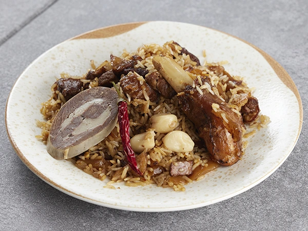
Choyxona oshi
narxi aniqlanmoqdaBuyurtma asosida tayyorlanadi
buyurtma asosida
Uyg'ur taomlari
15 ta taom-
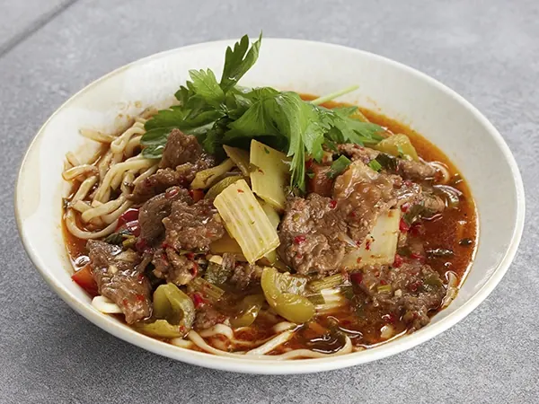
Uyg'ur lag'moni
45 000 so'mLag‘mon xamiri, mol go‘shti, bolgar qalampiri, basay, pomidor, selderey, sarimsoq
1 porsiyaAchchiq -
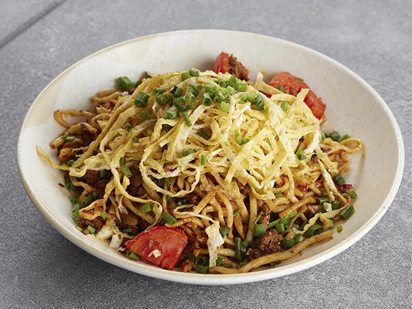
Qovurma lag‘mon
43 000 so'mLag‘mon xamiri, mol go‘shti, pomidor, selderey, sarimsoq, soya
1 porsiyaXitAchchiq -
Go‘sht say
138 000 so'mMol go‘shti, bolgar qalampiri, basay, pomidor, selderey, sarimsoq, soya
1 porsiyaAchchiq -
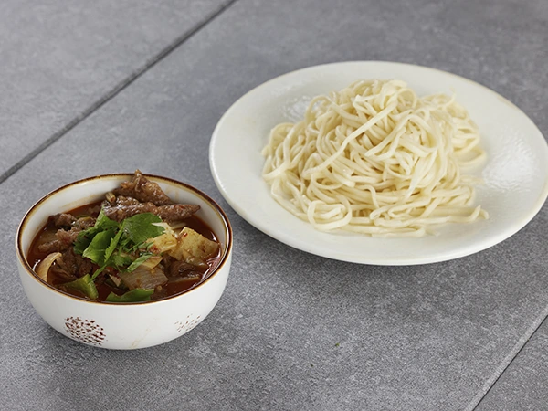
Ayrim say
54 000 so'mLag‘mon xamiri va say alohida
1 porsiya -
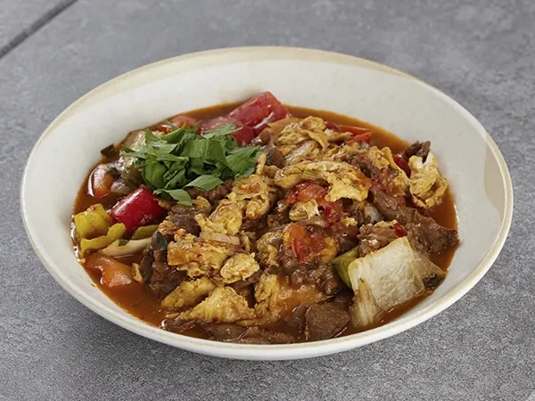
Tuxum say
41 000 so'mMol go‘shti, tuxum, bolgar qalampiri, basay, pomidor, selderey, sarimsoq
1 porsiya -
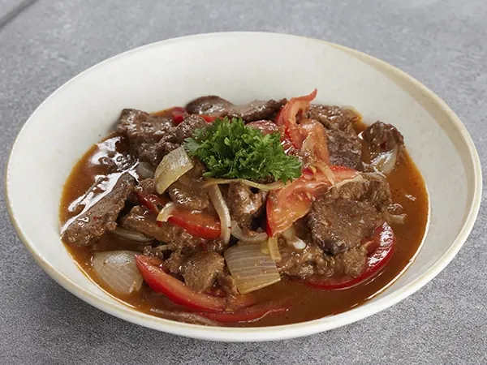
Taxta kabob
135 000 so'mMol go‘shti, piyoz, pomidor, soya
1 porsiya -
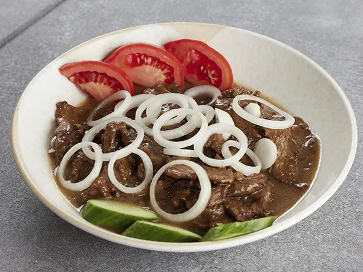
Sokoro
135 000 so'mMol go‘shti, pomidor, bodring, piyoz, soya
1 porsiya -
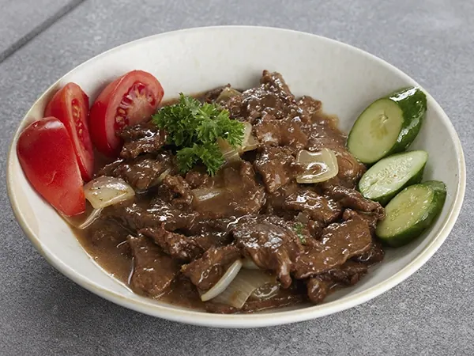
Sumboro
140 000 so'mMol go‘shti, piyoz, pomidor, bodring, soya
1 porsiya -
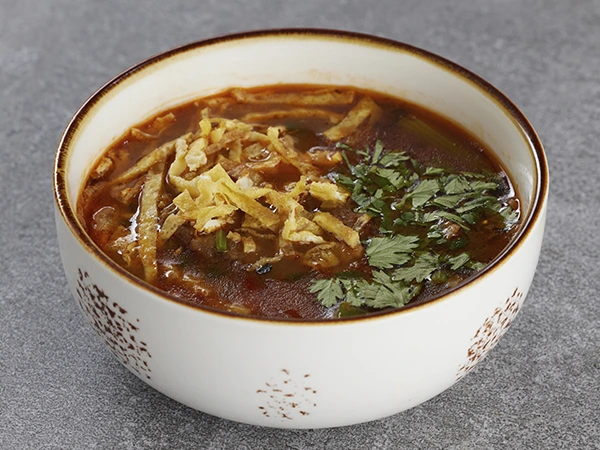
Manpar
36 000 so'mManpar xamiri, mol go‘shti, bolgar qalampiri, basay, pomidor, selderey, sarimsoq
1 porsiyaAchchiq -
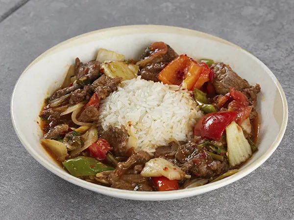
Ganfan
41 000 so'mGuruch, mol go‘shti, bolgar qalampiri, basay, pomidor, selderey, sarimsoq
1 porsiyaAchchiq -
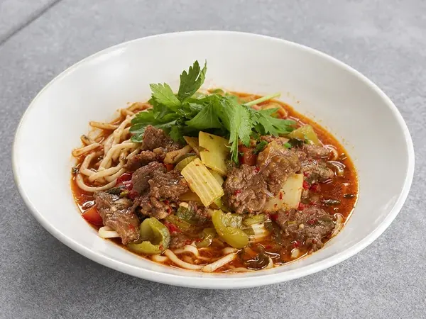
Uyg‘ur lag‘moni, kichik
37 000 so'm1 porsiya -
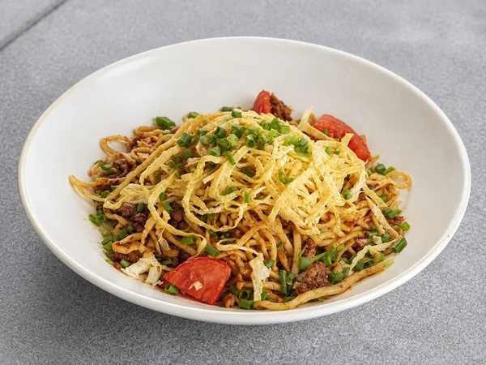
Qovurilgan lag‘mon, kichik
36 000 so'm1 porsiya -
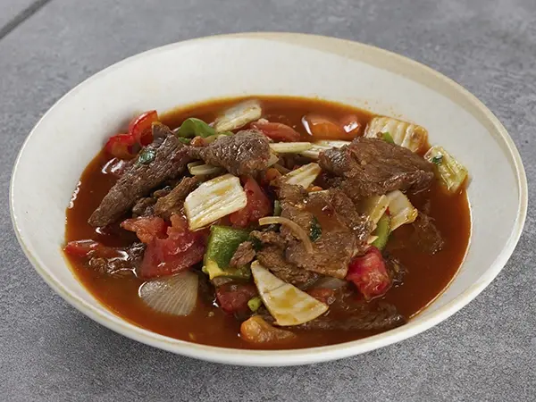
Go‘shtli go‘sht
68 000 so'm1 porsiya -
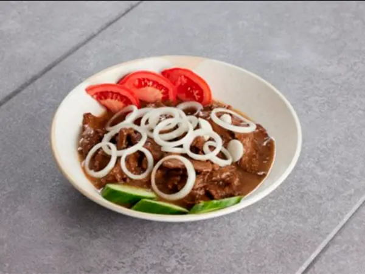
Sokoro, 240 g
70 000 so'm240 g -
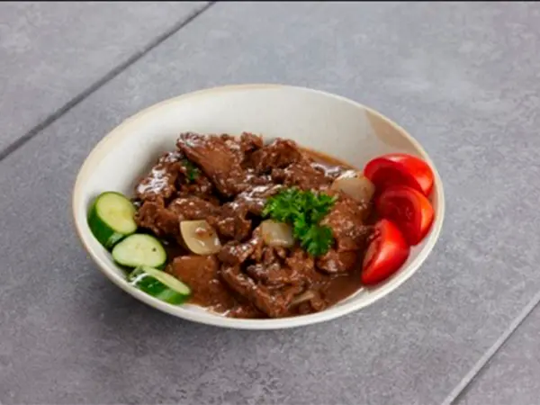
Sumboro, 240 g
70 000 so'm240 g
Salatlar
22 ta taom-
Maxsus «Olim Polvon» salati
59 000 so'mPomidor, bodring, ko‘katlar, shampinion, bolgar qalampiri, mol go‘shti, mozzarella, maxsus sous
1 porsiyaXit -
Achchiq chuchuk
20 000 so'mPomidor, bodring, piyoz
1 porsiya -
Chiroqchi
28 000 so'mPomidor, bodring, piyoz, suzma
1 porsiya -
Bahor
15 000 so'mBodring, ukrop, qatiq
1 porsiya -
Sveji assorti
30 000 so'mPomidor, bodring, sarimsoq, ko‘katlar, limon
1 porsiya -
Zelen assorti
25 000 so'mUkrop, kashnich, ko‘k piyoz, rayhon, sarimsoq, limon
1 porsiya -
Suzma
15 000 so'mSuzma, ko‘katlar
1 porsiya -
Vinegret
28 000 so'mLavlagi, kartoshka, sabzi, karam, piyoz, no‘xat
1 porsiya -
Rukola sirli
41 000 so'mRukola, cherri pomidor, bolgar qalampiri, sir
1 porsiya -
Grekcha salat
44 000 so'mPomidor, bodring, salat barglari, feta, bolgar qalampiri
1 porsiya -
Yaponcha salat
43 000 so'mPomidor, bodring, bolgar qalampiri, ot go‘shti, kashnich, soya sousi
1 porsiya -
Nejniy
48 000 so'mBodring, ot go‘shti, tuxum, makkajo‘xori, mayonez
1 porsiya -
Sezar
44 000 so'mAyzberg, tovuq, suxarik, cherri, bedana tuxumi, Sezar sousi, parmezan
1 porsiya -
Mujskoy kapriz
52 000 so'mBodring, ot go‘shti, indeyka, kolbasa, mayonez, parmezan
1 porsiya -
Fransuzcha
39 000 so'mBodring, lavlagi, karam, ot go‘shti, sabzi, mayonez
1 porsiya -
Olivye
41 000 so'mTuzlangan bodring, kartoshka, sabzi, ot go‘shti, tuxum, mayonez
1 porsiya -
Smak
35 000 so'mPomidor, ayzberg, suxarik, sir, mayonez, salat bargi
1 porsiya -
Choban
31 000 so'mPomidor, bodring, bolgar qalampiri, kashnich, limon
1 porsiya -
Qarsildoq baqlajon
44 000 so'mBaqlajon, rukola, maxsus sous
1 porsiya -
Bek salati
47 000 so'mTuzlangan bodring, tovuq, ot go‘shti, shampinion, shalot, qaymoq, mayonez
1 porsiya -
Qurtoba
65 000 so'mTafsilot uchun Telegram orqali bog‘laning
1 porsiya -

Meva assorti
narxi aniqlanmoqdaMavsumiy mevalardan
narxi Telegramda
Yevropa taomlari
8 ta taom-
Okroshka
34 000 so'mOt go‘shti, bodring, kartoshka, tuxum, ukrop, qatiq
1 porsiya -
Kuksi
41 000 so'mMol go‘shti, karam, bodring, tuxum, pomidor, maxsus lapsha, soya
1 porsiya -
Kartoshka fri
21 000 so'mKartoshka, ketchup
1 porsiya -
Kolbasa klassik
81 000 so'mKolbasa, kartoshka, sarimsoqli sous
1 porsiya -
Kolbasa achchiq
81 000 so'mAchchiq kolbasa, kartoshka, sarimsoqli sous
1 porsiyaAchchiq -
Pasta Alfredo
64 000 so'mQaymoqli Alfredo sousi bilan
1 porsiya -
Qo‘ziqorinli medalyon
129 000 so'mQo‘ziqorinli maxsus medalyon
1 porsiya -
Mini burgerlar
96 000 so'mBir nechta mini burger
1 set
Non va ichimliklar
4 ta taom-
Non
8 000 so'mTandir noni
1 porsiya -
Coca-Cola
15 000 so'm1 litr -
Fanta
15 000 so'm1 litr -
Pepsi
15 000 so'm1 litr
Hech narsa topilmadi. Boshqa so'z bilan urinib ko'ring yoki yordamchidan so'rang.
Narxlar o'zgarishi mumkin. Allergiya haqida ofitsiantni ogohlantiring.